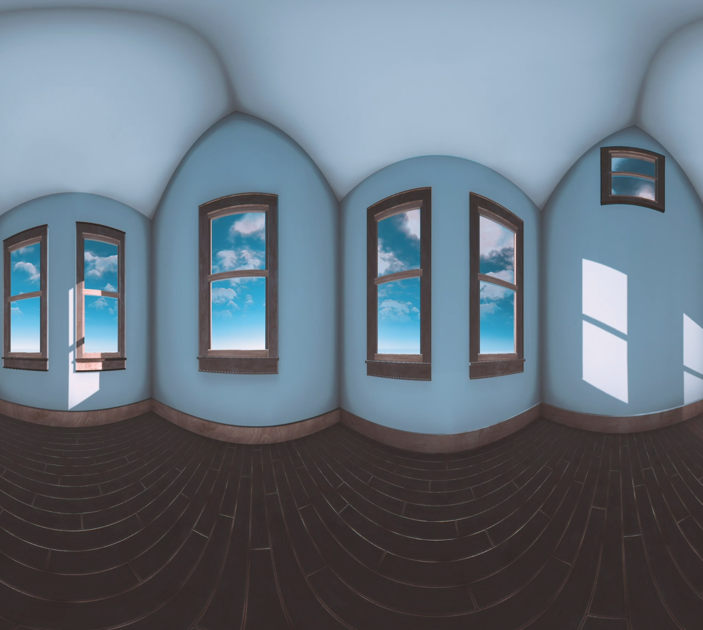
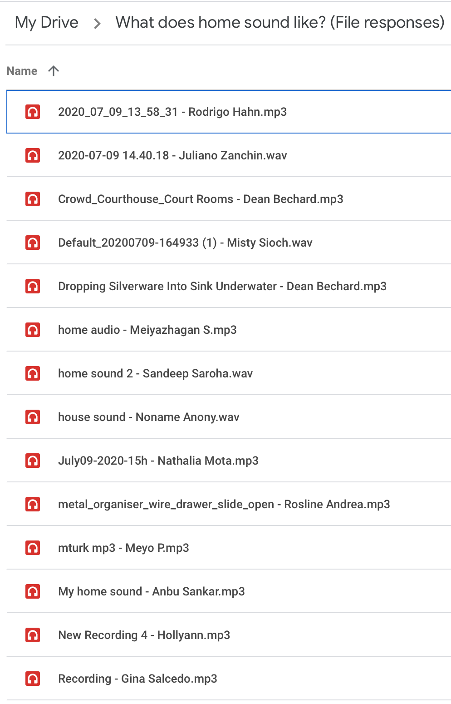
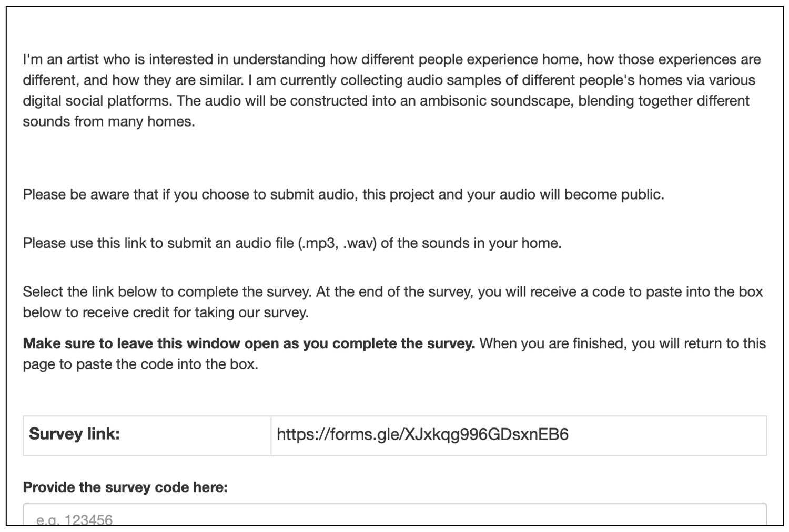

An Audio Analysis of Home
Virtual Reality / Sound Design / Research
The pandemic has presented shifted and intensified notions of home. It’s changed the ways we can exist together, and also illuminated the ways we exist in solitude. This experience utilizes sound data collection to understand notions of home during the pandemic. The sounds are compiled into a collaborative soundscape using spatial ambisonic audio. The audio is paired with a virtual reality experience of light passing through a 3D rendered home.


As a form of data collection, participants were sourced and provided audio samples of their homes using the Amazon Mechanical Turk, a crowdsourcing platform used to source data that requires human intelligence. The request was simple—please submit a short audio recording of your home. No other information was collected. Participants were informed that the audio would be used publicly. Roughly 50 audio recordings were submitted and all recordings were collected during the Summer of 2020.
The audio was then used to create a collaborative soundscape. The audio was edited as a spatial ambisonic file, which allows the audio to respond to the position of the listener’s head—creating a more immersive experience.
The audio was then used to create a collaborative soundscape. The audio was edited as a spatial ambisonic file, which allows the audio to respond to the position of the listener’s head—creating a more immersive experience.
The soundscape is paired with a virtual reality experience of light passing through a 3D rendering of a home—as a measure of time passing. For many, the time we spend in our spaces has increased due to the pandemic. It is with time that we begin to notice the way spaces behave—how light passes through and lands on a certain corner of the room come midday.
This activity was made possible by an Artist Grant through the Prairie Lakes Regional Arts Council with funds provided by the McKnight Foundation.
This activity was made possible by an Artist Grant through the Prairie Lakes Regional Arts Council with funds provided by the McKnight Foundation.
